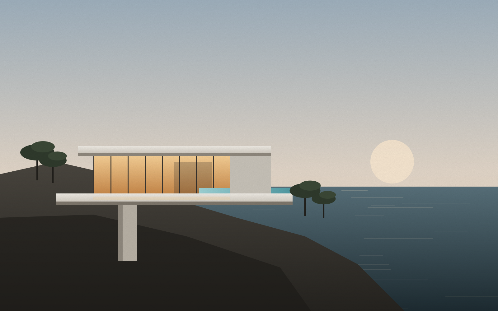
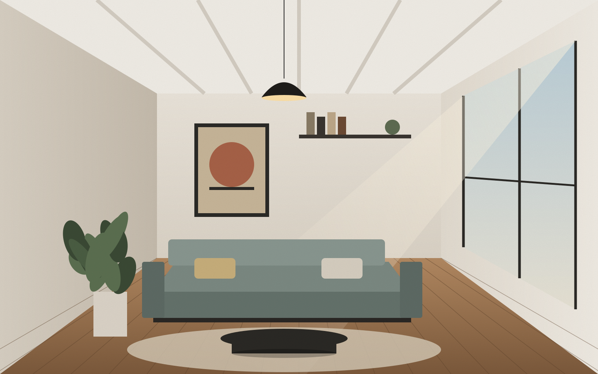
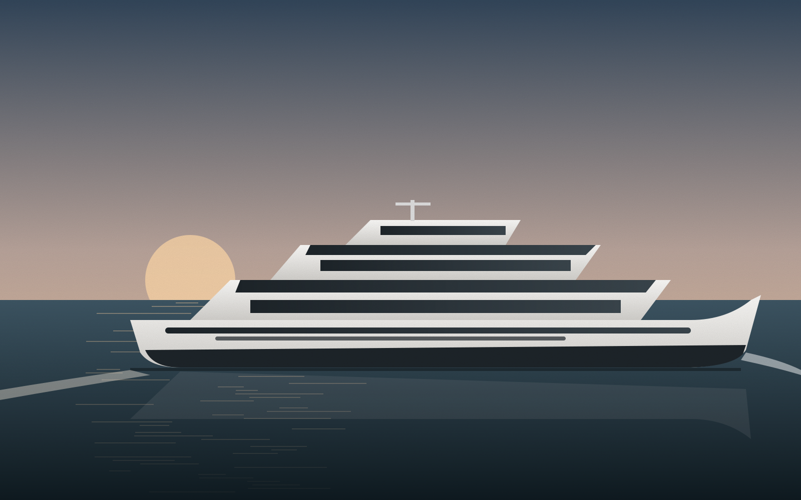
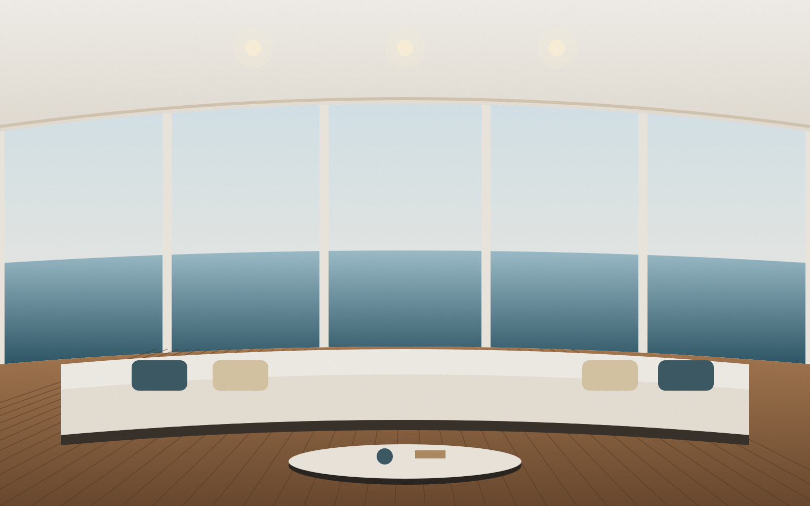

Mimarlık — İç Mimarlık — Yat Tasarımı
Karada ve denizde, yaşanacak mekânlar tasarlıyoruz.
Bir villanın konsolundan bir yatın salonuna; ölçeği değişse de sorumuz aynı: Bu mekânda nasıl yaşanacak?
Projeleri keşfetStüdyo
Biz mimarlığı bir binanın dış kabuğu, iç mimarlığı bir dekorasyon, yat tasarımını ise bir teknenin kaplaması olarak görmüyoruz. Üçü de aynı soruya verilen farklı ölçekli cevaplar: ışık nereden girecek, insan nerede duracak, malzeme zamanla nasıl yaşlanacak?
Can Erkurt Studio; mimar, iç mimar ve yat tasarımcılarından oluşan çok disiplinli bir ekiptir. Her projeye arazi, iklim ve kullanıcının alışkanlıklarını okuyarak başlar; konseptten uygulama detayına, mobilyadan aydınlatmaya kadar tüm süreci tek elden yürütürüz.
Karada edindiğimiz mekân bilgisini denize, denizde öğrendiğimiz hassasiyeti — her santimetrenin, her kilonun hesabını — karaya taşıyoruz.
Ekiple tanışın- 0Yıllık deneyim
- 0Tamamlanan proje
- 0m² tasarlanan alan
- 0Yat & tekne projesi
Disiplinler
Üç ayrı uzmanlık, tek bir tasarım dili. Projeleriniz için ihtiyaç duyduğunuz disiplinleri birlikte ya da ayrı ayrı yürütüyoruz.
-
Arazinin topoğrafyasından, rüzgârın ve güneşin yönünden doğan; bağlamına saygılı, zamana dayanıklı yapılar tasarlıyoruz. Villalardan konut projelerine, butik otellerden kültür yapılarına kadar her ölçekte çalışıyoruz.
- Konsept & avan proje
- Ruhsat projesi
- Uygulama projesi
- Peyzaj entegrasyonu
- Sürdürülebilir tasarım
- Şantiye denetimi
-
Mekânı içten dışa düşünüyoruz: dolaşım, ışık, akustik ve dokunduğunuz her yüzey. Özel tasarım mobilya ve aydınlatma ile her iç mekânı kullanıcısına özgü kılıyoruz.
- Mekân kurgusu
- Malzeme & renk
- Özel mobilya
- Aydınlatma tasarımı
- Anahtar teslim uygulama
- Styling
-
Motor ve yelkenli yatlar için dış form, genel yerleşim ve iç mekân tasarımı yapıyoruz. Tersane ve mühendislik ekipleriyle birlikte çalışarak ağırlık, denge ve denizcilik kurallarını estetikle buluşturuyoruz.
- Exterior styling
- Genel yerleşim (GA)
- İç mekân & mobilya
- Refit & yenileme
- Malzeme & ağırlık analizi
- Tersane koordinasyonu
Seçili Projeler
Her proje, kendi sorusuna verilmiş bir cevap.
Çizimden gerçeğe
Her çizgi, inşa edilebilir olmak için çizilir.
Konsept aşamasındaki ilk eskizden 1/20 detay paftasına kadar, tasarım kararlarını uygulamada ne olacağını bilerek veriyoruz. Kaydırıcıyı sürükleyerek Kaya Evi'nin görünüş çizimini ve görselini karşılaştırın.


M/Y Lodos
Ege'nin rüzgârından adını alan 42 metrelik motor yat; kesintisiz cam bantları, teak güverteleri ve denize açılan ana salonuyla, karadaki bir evin ferahlığını açık denize taşıyor.
- Boy
- 42 m
- Misafir
- 12 kişi · 6 kabin
- Kapsam
- Exterior + Interior
- Tersane
- Tuzla, İstanbul
Süreç
Açık, ölçülebilir ve sizinle birlikte.
- 01
Keşif
Arazi / tekne ziyareti, ihtiyaç programı, bütçe ve takvimin birlikte netleştirilmesi.
1–2 hafta - 02
Konsept
Eskizler, kütle çalışmaları, malzeme ve atmosfer panoları ile tasarım fikrinin kurulması.
3–6 hafta - 03
Geliştirme
Avan proje, 3B modelleme, gerçekçi görseller ve maliyet öngörüsü.
4–8 hafta - 04
Uygulama Projesi
Ruhsat, detay paftaları, mühendislik koordinasyonu ve teklif dosyaları.
6–12 hafta - 05
Uygulama & Teslim
Şantiye / tersane denetimi, üretim takibi, mobilya yerleşimi ve anahtar teslim.
Projeye göre
Bir proje mi
düşünüyorsunuz?
Bize projenizden kısaca bahsedin; iki iş günü içinde dönüş yapalım ve tanışma toplantısı planlayalım.
- E-postainfo@canerkurt.studio
- Telefon+90 212 000 00 00
- StüdyoÖrnek Mah. Tasarım Sk. No:1
Beyoğlu, İstanbul - Sosyal